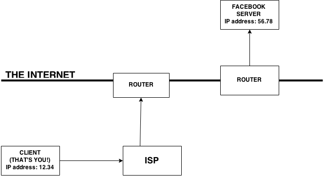

I know what the internet is (a place for memes), but what actually is the internet?
The internet is a place for different computers to talk to each other. But in a more literal sense, the internet is a straight-up wire buried in the ground, often copper or fiber optic. Sometimes, it's beamed through satellites or cell phone networks though. But mostly, it is an actual, physical thing, and it's how computers talk to each other.
So does that mean that when I'm connected via wifi, I'm actually...connected to that wire?
Yes, but not directly. You're connected to the internet via an internet service provider(ISP) (ie Comcast, Verizon, etc) that is hard-wired or otherwise directly connected into the internet. Your home computer is called a 'client' of the ISP.
Okay, walk me through the process of going to check my facebook.
First, you are going to connect to the internet via your ISP. Then, you are going to type in the facebook's URL, which is just a name for its IP address.
Wait, what's an IP address?
An IP address is the "address" of any given computer or server (we'll get to servers shortly). Just like your home address specifies your home, an IP address specifies your computer. Since you wouldn't want to memorize the IP address numbers for every server you need to talk to, just use the URL.
Okay, so when we left off, I had just typed in facebook's URL.
Great. Now, your ISP is going to take that request and bring it to the internet. Any place that the internet intersects with something directly connected to it, there is going to be a router. The router directs the information to whatever computer you're trying to talk to (in this case, the facebook server). Your request may go through 10-15 routers on its way to finding its destination.
You keep mentioning servers. What's a server?
A server is a massive computer that's connected directly to the internet. Webpages are files saved onto a server's harddrive. So if you want to get to facebook's login page, you are have to talk to facebook's server and ask it to load the login page file.
So wait, is an ISP a server?
No, it's a company! But an ISP has servers.
Cool! So can I see this whole process respresented in a diagram?
I'm so glad you asked! Check it out:
